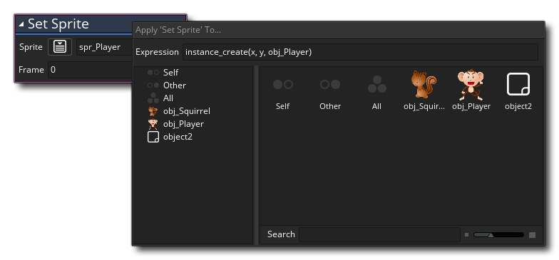

La plupart des actions dans les bibliothèques DnD™ ont une option pour appliquer l'action de différentes manières. C'est ce qu'on appelle définir la portée de l'action et cela peut être l'une des choses suivantes:  Essentiellement ce que vous GameMaker Studio 2 à GameMaker Studio 2 de quelle instance exécuter l'action. La portée de l'action par défaut est self, ce qui signifie qu'une fois l'objet créé en tant qu'instance dans la pièce, cette instance exécutera le code d'action. Cependant, ce n'est pas toujours ce que vous voulez, et vous voudrez peut-être que certaines actions affectent d'autres instances, voire toutes, dans la pièce. C'est là qu'intervient la modification de la portée de l'action.
Essentiellement ce que vous GameMaker Studio 2 à GameMaker Studio 2 de quelle instance exécuter l'action. La portée de l'action par défaut est self, ce qui signifie qu'une fois l'objet créé en tant qu'instance dans la pièce, cette instance exécutera le code d'action. Cependant, ce n'est pas toujours ce que vous voulez, et vous voudrez peut-être que certaines actions affectent d'autres instances, voire toutes, dans la pièce. C'est là qu'intervient la modification de la portée de l'action.
Les différentes portées pour effectuer des actions sont énumérées ci-dessous, mais il convient de noter que modifier la portée d'une action de cette manière n'appliquera la nouvelle portée à cette action et pas aux actions suivantes dans la chaîne. Si vous souhaitez appliquer un changement d'étendue d'action à plusieurs actions chaînées, utilisez d' abord l'action Appliquer à....
C'est la portée par défaut pour une action et indique simplement que l'action ne doit être appelée que par l'instance qui exécute le code.
le other La portée a deux fonctions principales, et la valeur qu'elle renvoie dépendra de l'endroit et de la manière dont vous l'utiliserez. Dans l' événement de collision, other renverra la valeur d' ID d'instance unique (une valeur unique utilisée pour distinguer les instances individuelles de chaque objet), de sorte que vous pouvez, par exemple, créer une instance «bullet» et avoir un événement de collision avec une instance «player» et dans ce cas Utilisez le other portée pour enlever les points de vie de l'objet "joueur", puis revenir à self portée pour détruire l'instance "balle".
En dehors de l'événement de collision, le other le réglage se comportera comme s'il était réglé sur noone à moins qu'il ne soit appelé depuis un bloc d'actions limité. Ce que cela signifie est que si vous modifiez la portée d'un groupe d'actions à un objet spécifique, alors que ces actions sont appelées, le other scope renvoie l'ID d'instance de l'instance qui a initialement appelé le groupe d'actions. Par exemple, vous pouvez exécuter une action Appliquer à... puis, dans la référence de bloc de code suivante, définir la portée sur other pour effectuer une action sur l'instance qui exécute l'ensemble du bloc d'événements, et non sur l'instance qui est étendue dans les blocs de code apply yo. L'image ci-dessous donne un exemple:
Dans l'image, nous vérifions la présence d'une souris dans l'instance, et si une image est détectée, nous modifions la portée à l'aide de l'action Appliquer à.... Les deux blocs d'action suivants sont maintenant appelés à partir de l'instance "obj_Player" (s'il y en a plus d'un alors ils seront tous exécutés) et ainsi l'objet changera son sprite et créera un objet au other position, c'est-à-dire: la position de l'objet qui exécute l'événement et a détecté la pression de la souris.
Lorsque vous définissez une action pour all, vous GameMaker Studio 2 à GameMaker Studio 2 d'exécuter ce bloc pour chaque instance active de la pièce actuelle. Par exemple, créer une action Destroy Object Instance et définir sa portée sur all provoquera la disparition de chaque instance de la pièce, quel que soit l'objet à partir duquel elles ont été créées.
Une action peut également recevoir un objet tel que sa portée. Cela signifie que toutes les instances de l'objet donné exécuteront cette action au même moment. Donc, si vous avez 100 instances ennemies dans la pièce, par exemple, et que vous voulez les définir toutes pour pointer vers un point spécifique. Vous appelez la direction du point de consigne et définissez la portée de l'action sur l'objet "obj_Enemy" et, lorsqu'elle est appelée, toutes les instances de cet objet changent de direction.
Le champ de saisie Expression vous permet de saisir l'ID d'une instance spécifique sur laquelle vous souhaitez que l'action fonctionne. Il peut s'agir de la valeur d'identifiant unique affectée à une instance depuis l' éditeur de pièce ou de l'ID d'une instance que vous avez stockée dans une variable (où la variable serait la valeur d'entrée) ou même d'une expression utilisant code, comme indiqué dans l'image ci-dessous:  Dans ce cas, une instance appelle Set Sprite à partir de l'instance créée par le code donné pour l'expression. Notez que dans ce cas, l'instance en cours de création exécutera son Créer un événement avant de l'action est appliquée.